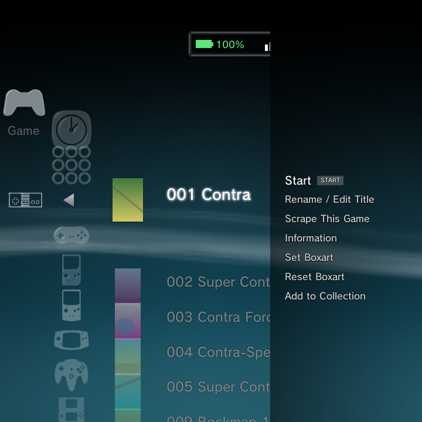
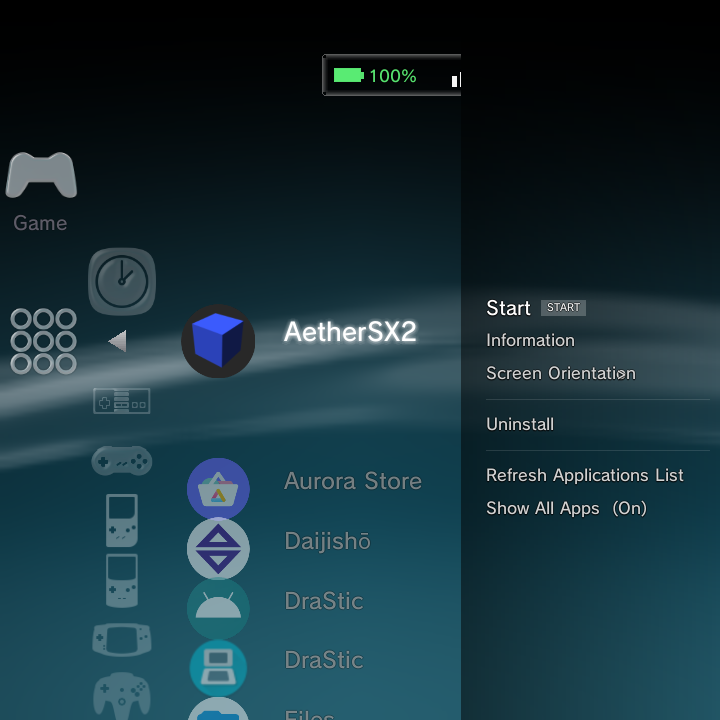
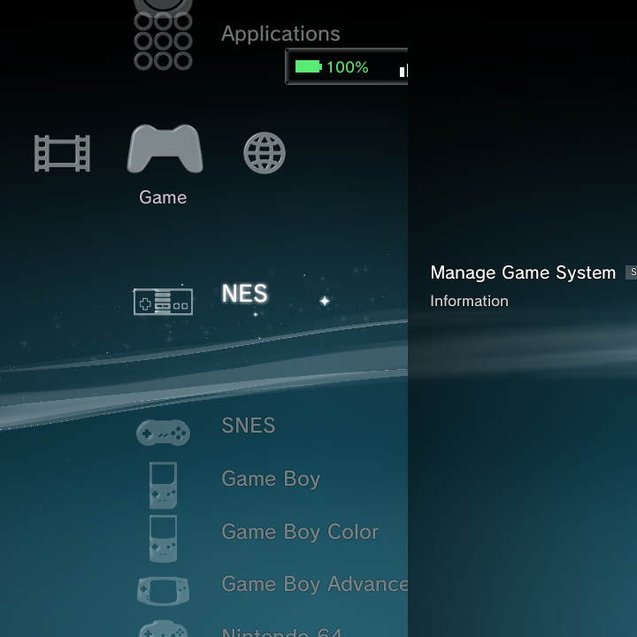

Almost everything in GammaOS Nano has an Options menu, a short context menu that changes depending on what you have highlighted. This is where you rename games, set boxart, manage systems, delete media, and much more.
Opening the Options menu
Highlight anything (a game, an app, a song, a folder) and press the Options button to open its context menu. The Options button is the Triangle glyph, which is the X button on your pad. You can also open it with:
- Tab on a USB keyboard
- Middle-click on a USB mouse
The menu contents change based on what you selected. The first bold row is the default action, which you can also trigger just by pressing A on the item.

The Options menu, its submenus, and every dialog it opens are side panels that share the same frosted chrome. They are fully controller-driven (D-pad plus A/B) and touch-capable: tap a row to select and activate it, drag to scroll, drag a slider track, tap Yes/No/OK, or tap the dimmed area to cancel.
On a game (or a Recently Played entry)
| Entry | What it does |
|---|---|
| Start | Launch the game |
| Add/Remove from Favorites | Star or unstar the game; your stars gather in one cross-system Favorites list under Game |
| Rename / Edit Title | Set the shown name everywhere; this also becomes the scraper search query |
| Scrape This Game | Re-fetch art and metadata for just this game (forces an overwrite) |
| Scrape with Custom Name... | Re-scrape just this game using a name you type, without renaming the file |
| Information | Full scraped info page: cover, fanart, synopsis, genre, players, rating, date, developer/publisher, file path and size |
| Set Boxart | Pick any image from your Photos as the cover; it appears immediately in every theme |
| Reset Boxart | Only shown once a custom or scraped cover exists |
| Add to Collection | Add the game to a collection, or create a new one |
| Remove from Collection | Only shown when you are inside a collection |
See Boxart for scraping in depth and Collections for grouping games across systems, including the cross-system Favorites list.
On an application

| Entry | What it does |
|---|---|
| Start | Launch the app |
| Information | App details |
| Keep Running in Background | Toggle: keep the app alive after you exit, so tools like music players or file managers are not force-stopped |
| Screen Orientation | Submenu: Default / Auto / Landscape / Landscape (reverse) / Portrait / Portrait (reverse), forced while the app is foreground |
| Dual-Stack Display | Submenu (dual-screen devices only): Disabled / Enabled |
| Run on Primary Screen | Toggle (dual-screen devices only): run a dual-screen app on the primary panel; the Control Center yields the bottom panel to it |
| Uninstall | Real user apps only (system and protected apps do not show this) |
| Refresh Applications List | Rescan installed apps for fresh labels and icons |
| Show All Apps (On/Off) | List every launchable app, or only your user apps |
You can also press Y on any app to pin or unpin it to the home; pinned apps appear in a Pinned Apps row under Game.
More on managing installed apps is on the Applications page.
On a game-system row (on the Game home)

| Entry | What it does |
|---|---|
| Manage Game System | Jump straight into that system's editor (emulator, scan folders, icon, and more) |
| Information | System details |
Manage Game System is the fast way back into the editor covered in Custom System.
On a collection
| Entry | What it does |
|---|---|
| Open | Enter the collection |
| Rename Collection | Change its name |
| Delete Collection | Remove the collection (the games stay in their systems) |
On a music album, track or playlist
| Entry | What it does |
|---|---|
| Play | Start playback |
| Information | Track or album details |
On a video
| Entry | What it does |
|---|---|
| Resume / Play from Beginning | Shown when a video is partly watched, otherwise just Play |
| Add to Playlist | Add the video to a playlist |
| Change Icon | Grab the current frame as this video's column thumbnail (from the video player, Options > Change Icon) |
| Copy | Copy the file |
| Delete | Remove the file |
| Information | Video details |
On an IPTV channel
| Entry | What it does |
|---|---|
| Watch | Open the live channel |
| Add to Playlist | Save the channel to a playlist |
On a photo album (folder)
| Entry | What it does |
|---|---|
| Sort By | Submenu: Film Date (newest/oldest), Import Date (newest/oldest), Image Name |
| Group Content | By Month / By Year / By Album / All |
| Slideshow | Normal / Slide / Portrait / Photo Album / Photo Album 2 |
| Delete | Permanently remove the whole group (by folder, month or year); the files are deleted for real |
| Information | Album details |
On a single photo (thumbnail grid)
| Entry | What it does |
|---|---|
| Delete Multiple | Check several photos and permanently remove them all at once |
| Sort By | Reorder the grid |
| Slideshow | Start a slideshow |
| View | Open the photo full screen |
| Copy | Copy the single photo |
| Add to Playlist | Add it to a photo playlist |
| Send it to print | |
| Delete | Remove the photo |
| Information | Photo details |
Bulk photo delete (a whole group or several checked photos) removes the files for real. There is no bulk photo Copy, since the clipboard holds a single path; single-photo Copy still works.
In the File Explorer
On a folder: Open, Copy, Move, Paste Here (when something is on the clipboard), Rename, Delete, Information.
On a file: Copy, Move, Paste Here, Rename, Delete, Information.
On an imported media folder or game scan source
| Entry | What it does |
|---|---|
| Remove Folder / Remove Source | Stop scanning that folder or source |
Removing a folder here does the same thing as the hidden Y shortcut on those "remove item" lists.
Submenus
Options like Sort By, Slideshow, Screen Orientation, and Dual-Stack expand inline, and the highlight lands on the choice that is currently active, so you can see your current setting at a glance.
Related
For the button that opens all of this, see Getting Around, and for the full button chart see OS Controls.